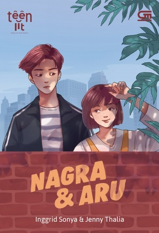

Halo Semua!
Perkenalkan, Saya Nellis Neria Aurum Tectona NIM. A11.2020.12668 dari Prodi Teknik Informatika, Fakultas Ilmu Komputer, Universitas Dian Nuswantoro Angkatan 2020. Kali ini saya akan sedikit memberikan rekomendasi terhadap film, novel serta lagu yang akhir-akhir ini saya sukai. Saya berharap, semoga beberapa rekomendasi dari saya akan sedikit memberi hiburan dikala PPKM seperti sekarang ini bagi kalian semua.
Enjoy!!
Sincerely,
Nellis Neria.
Novel: Nagra & Aru

Novel yang berjudul "Nagra & Aru" merupakan buku ke 3 yang ditulis oleh Inggrid Sonya setelah "Revered Black" serta "Wedding With Converse". Buku bergenre Teenlit ini merupakan hasil kolaborasinya bersama sang sahabat, Jenny Thalia yang juga dikenal sebagai penulis novel "Faurine". Pada 28 Januari 2019, Novel ini resmi diterbitkan Gramedia Pustaka Utama dan diperjualbelikan secara legal dalam bentuk ebook maupun hardbook yang dapat kita dapatkan melalui Gramedia, Online Marketplace maupun di Google Playbook.
Satu kata untk novel ini adalah menghibur. Kamu pasti akan tertawa saat mengetahui jurus-jurus mematikan Aru untuk pedekate dengan Nagra. Aru, seorang cewek mungil berambut pendek, dan menggilai drama korea serta webtoon. Sedangkan Nagra adalah cowo ganteng, tinggi, dan bisa membuat cewek-cewek bertekuk lutut padanya. Tak ayal bila ia dijuluki playboy oleh kawan-kawannya.
Novel yang berlatar masa SMA ini diceritakan dari dua sudut pandang, yakni Nagra dan Aru. Begitu terus bergantian setiap bab-nya. Jadi, Ketika ada kejadian yang sama, tapi diceritakan dari dua sudut pandang yang berbeda, yaitu Nagra dan Aru. Nah, dari penjelasan masing-masing sudut pandang inilah yang membuat semuanya jadi gambling, karena tahu maksud dari dua sisi tokohnya.
Lagu: Rumpang - Nadin Amizah
LIRIK LAGU RUMPANG by NADIN AMIZAH
Pagi tadi aku masih menangis
Ada rasa yang tak kunjung mati
Ada seseorang di atasku
Menahan semua rasa malu
Sempat ku berpikir masih bermimpi
24/7 tanpa henti
Matahari dan bulan saksinya
Ada rasa yang tak mau hilang
Aku takut sepi tapi yang lain tak berarti
Katanya mimpiku 'kan terwujud
Mereka lupa tentang mimpi buruk
Tentang kata maaf, sayang aku harus pergi
Sudah kuucap semua pinta
Sebelum ku memejamkan mata
Tapi selalu saja kamu tetap harus pergi
Sempat ku berpikir masih bermimpi
Bertahun berlanjut tanpa henti
Kulitmu yang memudar saksinya
Tetap rasaku tak pernah hilang
Aku takut sepi tapi yang lain tak berarti
Katanya mimpiku 'kan terwujud
Mereka lupa tentang mimpi buruk
Tentang kata maaf, sayang aku harus pergi
Sudah kuucap semua pinta
Sebelum ku memejamkan mata
Tapi selalu saja kamu tetap harus pergi
Banyak yang tak ku ahli
Begitu pula menyambutmu pergi
Banyak yang tak ku ahli
Begitu pula menyambutmu pergi
Banyak yang tak ku ahli
Begitu pula menyambutmu tak kembali
Katanya, mimpiku, akan terwujud
Mereka, berbohong, mimpiku tetap semu
------------------------------------------------------------
Jangan lupa untuk melihat Official Music Videonya ya!
Film: Clouds (2020) By Disney
Sinopsis
Clouds merupakan film drama musikal yang diadaptasi dari buku berjudul Fly a Little Higher: How God Answered a Mom's Small Prayer in a Big Way karya Laura Sobiech. Buku tersebut merupakan memoar tentang perjuangan anak Laura, Zach Sobiech, dalam meraih mimpi menjadi musisi sambil melawan penyakit kanker tulang.
Kisah dalam Clouds fokus pada bulan-bulan terakhir kehidupan Zach Sobiech. Zach telah didiagnosis mengidap kanker sejak ia berusia 14 tahun. Dengan berbagai pengobatan dan perawatan medis, Zach masih dapat beraktivitas selayaknya remaja biasa. Namun, hidupnya berubah drastis pada usia 17 tahun.
Saat hendak mengajak Amy Adamle piknik berdua, Zach mendadak batuk hebat hingga membuatnya harus dibawa ke rumah sakit. Dari sinilah diketahui bahwa kanker dalam tubuh Zach telah menyebar luas, membuatnya hanya punya waktu sekitar enam bulan untuk hidup.
Menyadari waktu yang dimilikinya begitu terbatas, Zach dan Sammy memutuskan untuk mengejar mimpi membuat album musik. Sammy adalah sahabat Zach sekaligus partner menulis lagu.
Lagu-lagu yang diciptakan dan dibawakan Zach bersama Sammy pun sukses menjadi viral. Di sisi lain, Zach menyadari bahwa bagaimana pun ia menghabiskan waktu yang tersisa, pada akhirnya ia akan menyakiti orang-orang yang ia cintai.
Seiring dengan kondisi kesehatan Zach yang kian memburuk, ia memutuskan bahwa cara terbaik untuk mengucapkan selamat tinggal adalah melalui musik. Lagu berjudul “Clouds” pun lahir, yang pada realitanya juga sukses menjadi sebuah hit.
Setelah Zach meninggal dunia, lagu tersebut bahkan sempat menduduki posisi pertama pada tangga lagu iTunes. Film Clouds menyajikan kisah yang begitu menginspirasi sekaligus mengaduk emosi.